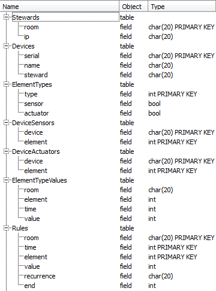

TABLE OF CONTENTS
- 1. domotica/db
- 1.1. db/db-manager
- 1.1.1. db-manager/new-db-manager
- 1.1.2. db-manager/add-device
- 1.1.3. db-manager/add-device-type
- 1.1.4. db-manager/add-steward
- 1.1.5. db-manager/add-time-value
- 1.1.6. db-manager/get-rules
- 1.1.7. db-manager/remove-device
- 1.1.8. db-manager/restore-state
- 1.1.9. db-manager/update-rules
domotica/db [ Modules ]
NAME
db
DESCRIPTION
Beheerst de gegevensbank van het systeem. Elke steward en device die door de user aangemaakt wordt wordt opgeslagen in de database. De gegevensbank :
- De Stewards table laat toe om stewards op te slaan.
- De Devices table laat toe om devices op te slaan.
- De ElementTypes table toont welke types meetbaar en/of beinvloedbaar kunnen zijn door sensoren en actuatoren.
- De DeviceSensors table toont, voor elk type device (devices zijn van hetzelfde type wanneer ze dezelfde naam hebben), welke sensoren het heeft.
- De DeviceActuators table toont, vool elk type device (devices zijn van hetzelfde type wanneer ze dezelfde naam hebben), welke actuatoren het heeft.
- De ElementTypeValues table toont de waarde van een bepaalde element-type in een bepaalde kamer op een bepaalde tijd.
